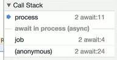
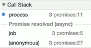
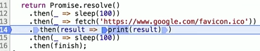
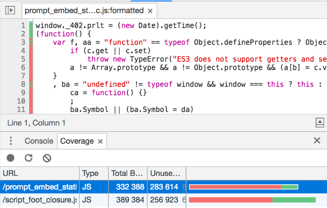
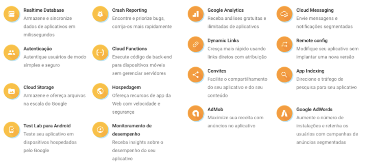

Google I/O - Web
Publicado em:
@davidrobert
Durante várias sessões, os palestrantes incentivaram fortemente o uso de AMP (Accelerated Mobile Pages) e PWA (Progressive Web Apps), além de reforçarem que Mobile Web é mainstream.
Um Product Manager do Twitter apresentou casos de sucesso com PWA, onde seu uso trouxe um incremento de 65% de pages/sessions, e 75% mais tweets.
Forbes, Expedia, Pinterest, Lyft, Airbnb, Trivago, Lacôme, entre outros já utilizam PWAs. Na Lacôme, houve um incremento de 53% de tempo de sessão após a adoção da tecnologia.
No caso de uso do Trivago, é perguntado ao usuário se deseja adicionar um atalho na home, que é apresentado de maneira idêntica a um aplicativo nativo.
O Head de Web Products do Olacabs apresentou um caso de sucesso do uso de PWA com web components. Atualmente, o Olacabs tem mais de 1 milhão de corridas diárias, em mais de 110 cidades, com mais de 600 mil motoristas. A versão com PWA teve cerca de 30% mais conversão que o app nativo,e 20% das reservas usando PWA foram de usuários que haviam desinstalado o app.
Outros tópicos relevantes:
- Status da implementação de novas features do Chrome - https://www.chromestatus.com/features
- Documentação e tutorais sobre AMP, PWA e desenvolvimento web em geral - https://developers.google.com/web
- Exemplo de aplicação PWA que utiliza funcionalidades de video-on-demand - http://bit.ly/pwa-media
Web Payments
Foram apresentados os casos de uso de Web Payments com Wego e Kogan, focando o processo de checkout na versão mobile web.
Web Payments já está pronto para utilização, e diversas empresas já implementaram: Monzo, Kogan, Groupon, Nivea, Wego, Washington Post, Mobify, Shopify, WooCommerce, BigCommerce, WompMobile, Weebly, etc.
O time do Alipay & Alibaba apresentou um caso de sucesso da utilização de Web Payments, afirmando que versão mobile web é a que melhor atende sua audiência global. O Alipay também possibilita a utilização de fingerprint (impressão digital do usuário) para autorizar uma compra.
A integração de pagamento com Web Payments com PaymentRequest é feita de maneira simples, utilizando uma API JavaScript cross-browser. Navegadores que tem suporte a API: Chrome, IE, Samsung Internet e, em breve, Firefox.
Por enquanto o número de parceiros de pagamento é limitado: PayPal, Samsung Pay e Alipay. Entretanto, outras alternativas serão adicionadas em breve. O Android Pay chegará ao Brasil até o fim de 2017.
Continuando no tema Payments, foi apresentado o resultado de uma pesquisa sobre transações mobile. Cerca de 80% das transações de compra no ambiente mobile só possuem 1 produto. E apresentar a opção para o usuário “Buy Now”, além de “Add to Cart”, aumenta significativamente a conversão.
DevTools
O debug ficou muito melhor: antes, os breakpoints ficavam associados à linha que eles foram adicionados, e quando ocorria alguma alteração no código eles ficavam no lugar errado; agora os breakpoints são associados ao códigos (claro, uma grande refatoração vai fazer com que a ferramenta “se perca” mas isso já é uma grande melhoria).
Com o JavaScript ganhando novos recursos de programação (como, por exemplo, promises e async/await functions), o devtools também teve que melhorar. Agora podemos ver se estamos dentro de uma função que foi executada de maneira asynchronous no stack trace. Por exemplo:
 
Além disso, o debug de arrow functions sempre foi um problema (já que podemos fazer tudo em uma linha de código), mas agora podemos inserir breakpoints por colunas e não apenas por linha como antes:

Para quem gosta de debuggar seus projetos Node com o Chrome, também houve melhoria.
O novo painel de Performance vai nos ajudar a encontrar pontos no código que podem ser melhorados. Basicamente, ele é uma junção dos painéis Network e Profile, permitindo, por exemplo, visualizar onde um arquivo JavaScript terminou de ser carregado e quando começou a sua execução (Evaluate Script). Outro exemplo de funcionalidade demonstrado foi o carregamento de uma fonte customizada e como ela impactou na experiência dos usuários, tudo isso com screenshots onde conseguiremos ver o carregamento/execução dos assets.
Com a nova seção de Coverage dentro do painel Console, será possível ver exatamente qual parte do código e o quanto (em porcentagem) de nossos css/js está sendo realmente utilizado, e a ferramenta é inteligente o bastante para entender que alguns estilos e funções são aplicadas apenas se houver interações do usuário, de modo que essa porcentagem muda em tempo real conforme o uso da aplicação.

Outros detalhes interessantes: - Screenshots de telas inteiras mesmo com barra de rolagem; - Finalmente poderemos editar os cookies, sem a necessidade de extensões de terceiros; - Com o Chrome headless poderemos fazer varias ações na linha de comando, como por exemplo screenshots e ações que só eram possíveis antes com selenium https://developers.google.com/web/updates/2017/04/headless-chrome; - DevTools: State of the Union 2017 (Google I/O ‘17) https://youtu.be/PjjlwAvV8Jg - Chrome 59 - What’s New in DevTools - A ferramenta Lighthouse foi integrada ao DevTools do Chrome https://www.chromestatus.com/features - Web Components -> Lançamento do Polymer 2.0 https://www.polymer-project.org/ - https://developers.google.com/web/tools/lighthouse/
V8
Foram apresentados diversos dados sobre a evolução da tecnologia V8, e como essa evolução impacta positivamente o usuário final. As melhorias incluem redução do consumo de memória, melhora na performance do setup inicial e as otimizações feitas em tempo de execução (JIT) para múltiplas execuções da mesma chamada.
Tópicos recomendados para uma boa compreensão:
- Conhecer bem JavaScript é fundamental;
- Entender o comportamento entre uma execução e múltiplas execuções da mesma chamada em JS;
- TurboFan;
- Ignition Interpreter;
- Orinoco;
- Speedometer 2;
- Otimizações: Generators, Async e Await.
- https://nodejs.org/en/blog/release/v8.0.0/#say-hello-to-v8-5-8
- https://v8project.blogspot.com.br/2017/05/launching-ignition-and-turbofan.html
Cloud / Firebase
Diversas sessões sobre Firebase ocorreram durante o evento, focando principalmente em autenticação por número de telefone, hosting e realtime.  - https://firebase.google.com/
Conclusão
Nesse post vimos algumas das novidades anunciadas durante o Google I/O focadas em Web. O que acharam? Gostaram das mudanças? Deixe seu comentário!